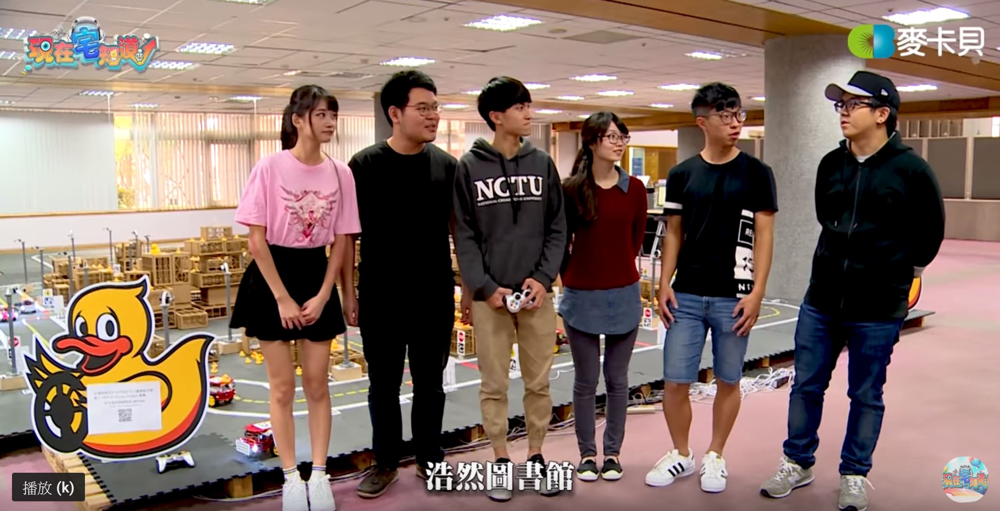

人本計算專題 - 課程花絮
2019-07-10
由四位老師共同指導的人本計算專題課告一段落，課程內容涵蓋機器人、機器學習、Android App開發、自駕車技術，學生利用課程所學技術發想並實現數個有趣的人本導向專題，包含為了減少人力短缺問題，幫助農民的採草莓機器人、協助救災的災難應變機器人進行搜救任務等專題，影片連結。
感測與智慧系統 - 課程花絮
2019-07-10
感測與智慧系統課程以移動式機械手臂系統為主軸，其內容涵蓋2D與3D的環境感知、手臂控制系統以及深度學習的應用。在課程的尾聲，我們透過一場小型競賽來模擬工廠倉儲系統，讓學生利用在課程中學到的技能陸續完成相關任務。我們也在課程中介紹虛擬容器--Docker，讓學生在實現自己設計的演算法的同時不需要去處理系統相依性的相關問題。
關於小型競賽的資訊，請點此：Video Link
關於課程的資訊，請參考課程網頁：Course Website.
Duckietown Summer School 2018
2018-08-10
The Duckietown 基金會宣佈舉辦 AI Driving Olympics, 此競賽主要為人工智慧與自駕車技術之應用。AI Driving Olympics 2018 將在2018年12月的NIPS舉辦，NIPS為機器學習領域中頂尖的研討會之一。這也是第一個在機器學習研討會舉辦的機器人競賽。AI Driving Olympics由蘇黎世聯邦理工學院（瑞士）、蒙特婁大學（加拿大）交通大學（台灣）、Toyota Technological Institute at Chicago（美國）、清華大學（中國）、喬治亞理工學院（美國）6個學術研究單位以及nuTonomy、Amazon Web Services (AWS）共同合作舉辦。我們在交大舉辦涵蓋這些基礎技能的暑期課程。
Course Website.
Video
軟體創意專題
2019-07-10
Duckietown NCTU 是 MIT Duckietown 的第一個分支。我們在交大規劃並開設一系列的課程，包含研究所的機器人視覺以及大學部的軟體創意專題。期望讓學生能著手進行與自動駕駛或是輔助科技相關的專題實作。另外我們同時也開設Robotics Seminar課程，希望能讓增加大家對機器人領域的興趣，也建立交大與國際機器人團隊連結。
2019台北市高中高職博覽會
2019-03-09
交通大學與建國中學攜手合作展出Duckietown。

知名網路電視台來訪交大
2019-02-27
麥卡貝來訪交大電機與Duckietown。
訪問連結
陽明大學學生會代表參觀
2018-10-27
陽明大學學生行政組織來到竹湖RobotX練習場地，隊員David正在介紹團隊使用的感知、AI技術。
交通大學2018繁星計畫錄取生參觀Duckietown
2018-03-17
我們將Duckietown介紹給今年繁星計畫錄取交大電機系的新生，希望喚醒他們對機器人領域的共鳴與熱情。
歡迎來到 Duckietown NCTU
Duckietown NCTU 是 MIT Duckietown (http://duckietown.mit.edu)第一個分支，我們開辦了研究所課程-機器人視覺以及大學部課程- 軟體創意專題，兩大課程目標在於自走車與輔助科技相關專題的實作，更詳細的介紹在http://duckietown.nctu.edu.tw。此外，我們也開辦了適合各學級學生的機器人系列講座，激發學生投入機器人領域的動機，也讓交通大學學生與國際機器人研究團隊接軌。
課程花絮
軟體創意專題 2017

感知與智慧系統 2017

機器人系列講座 2017

機器人視覺 2017

軟體創意專題 2016

機器人視覺 2016

❮
❯
Pi 2 Duckiebot Tutorial
我們將MIT的教材簡化為A-H的主要步驟，也適合非電資領域的學者上手。此外我們也提供了樹梅派3核心的小鴨車機器人教材稱為"Duckiebook"，如果過程中遇到任何問題，歡迎大家訪問我們的實驗室成員。
Pi 2 Duckiebot Tutorial (MIT)
Pi 3 Duckiebot Tutorial